Generative AI at the Edge:
Running Small Language Models with llama.cpp
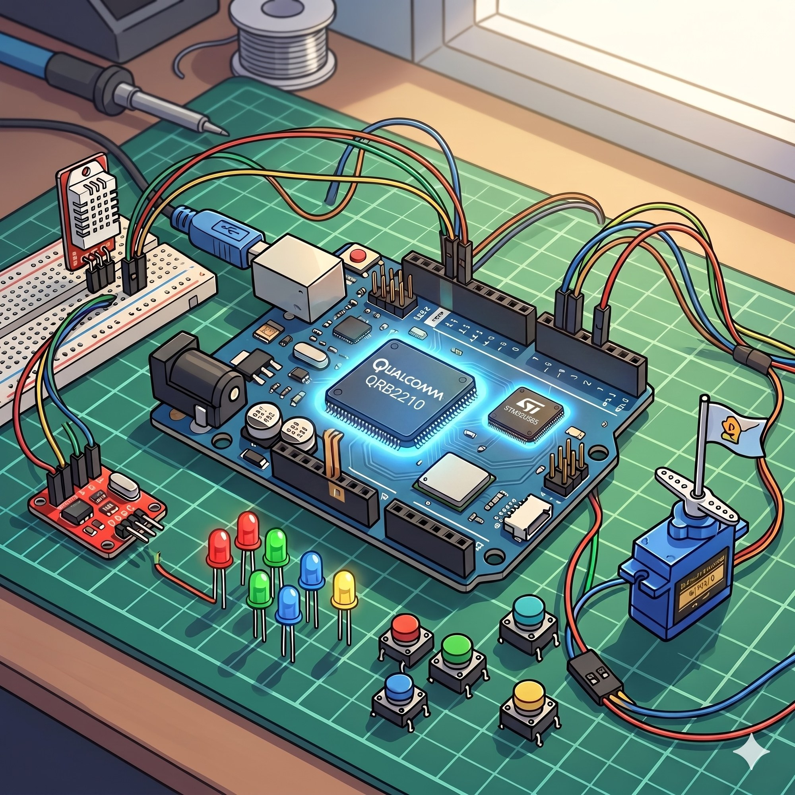
Course materials for this chapter — slide deck · video walkthrough, 21:19 (Chapter 2 of the IESTI05 lecture series).
1. Introduction
What This Tutorial Covers
This tutorial runs a Small Language Model (SLM) directly on the Arduino UNO Q, with no internet connection and no cloud API calls. The inference engine is llama.cpp, running entirely on the Linux (MPU) side. You will learn three ways to talk to it:
- The command line (
llama-cli) — one-shot prompts, no server, the fastest way to sanity-check a model. - A local HTTP server (
llama-server) — an OpenAI-compatible API you start by hand and query withcurlor Python. - Python — first with the standard
openaiclient library, then with raw HTTP calls, so you can see what the library is doing for you underneath.
This chapter is deliberately self-contained and tool-focused: no Bridge RPC, no MCU sketch, no systemd service. Those come next, once you’re comfortable with the tools themselves — see Going Further for where this leads.
Why this approach?
- Full local inference. No API keys, no rate limits, and prompts never leave the device.
llama.cppgives you fine-grained control over memory usage (KV cache quantization, context length, thread count), which matters when RAM is shared with the OS.llama-serverspeaks an OpenAI-compatible HTTP API, so the same client code that talks to a local SLM today can point at a cloud LLM tomorrow with a one-line URL change — the pattern you’ll use for real applications, not just this tutorial.
By the end of this tutorial, you will be able to build llama.cpp from source, run a quantized SLM interactively from the terminal, serve it over HTTP, and call it from Python using both a standard client library and raw requests.
Prerequisites
This tutorial assumes you have completed the Setup chapter and are comfortable connecting to the UNO Q via SSH (or VS Code Remote-SSH) and using basic Linux commands.
2. Small Language Models on the Edge: What’s Realistic on the UNO Q
A Small Language Model (SLM) here means a transformer-based language model with roughly 100 million to 7 billion parameters, optimized (pruned, distilled, and quantized) to run on CPU-only hardware with a few GB of RAM. The “small” is relative — modern GPTs have well over 1 trillion parameters — but these models are big enough to handle real classification, summarization, structured output, and short conversational tasks.
Why SLMs Matter for Edge AI
Early TinyML models were single-purpose: a wake-word detector, an image classifier, a vibration anomaly detector. One model, one task. SLMs change that. A single sub-1B-parameter model can classify, summarize, reformat, translate, and reason about structured inputs, all at the edge, all without a network call. The cost is latency (seconds, not milliseconds) and the need for a Linux-capable platform with at least 2 GB of RAM. The UNO Q sits right at that threshold.
The Memory Reality on a 4 GB UNO Q
The UNO Q 4 GB variant has 4 GB of LPDDR4X RAM shared between the OS, system services, the App Lab runtime, and your application. After boot, with no user app running, free -h typically shows about 2.8 to 3.0 GB available and 600 to 900 MB in use.
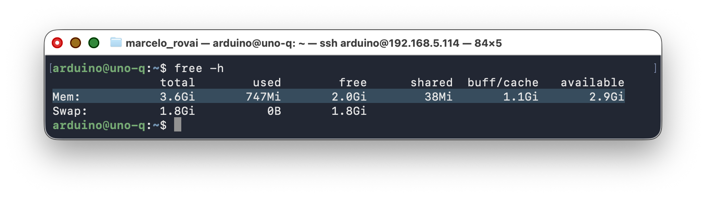
Below, htop shows the UNO Q 4GB running a 0.8B-parameter SLM at 8-bit quantization:
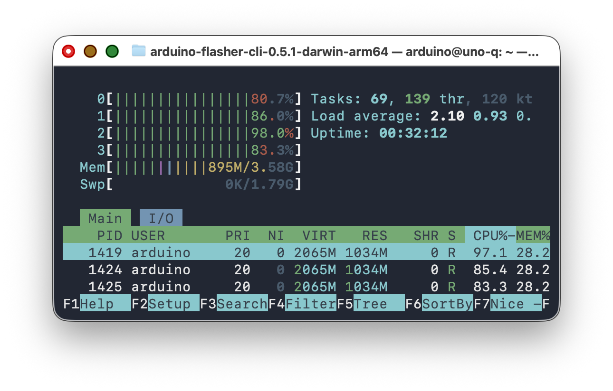
The 2 GB variant can run the smallest models (SmolLM2-135M, SmolLM2-360M) but cannot comfortably fit 0.8B-parameter models. This chapter targets the 4 GB board.
Storage Reality: A Single Partition
Storage layout depends on your factory image. Run
df -hto check. There are two layouts in the wild:
- Older images:
/and/homeshare a single ~9.8 GB partition with ~830 MB free after boot. Disk management matters; follow the cleanup steps in this chapter.- Newer images:
/home/arduinois on a separate ~18 GB partition; llama.cpp source, models, and any project all land there. The 9.8 GB root partition stays mostly untouched by this tutorial, and you can skip the shallow-clone and build-tree-deletion steps.
Check your available space before starting:
df -h /home/arduinoYou need at least 5 GB of free space to complete the build and model download. If you have less, see Section 11 for cleanup tips.
Why Qwen 3.5
Qwen3.5-0.8B (released February 2026 by Alibaba’s Qwen team) is the recommended SLM for the UNO Q for a few reasons:
- Designed for edge devices. The Qwen3.5 Small series (0.8B, 2B, 4B, 9B) uses a hybrid architecture that combines Gated Delta Networks with sparse Attention and is tuned for low-latency inference on constrained hardware.
- Hybrid thinking/non-thinking mode. In non-thinking mode the model answers directly without internal chain-of-thought, which keeps latency low and avoids the “reasoning loops” that plague thinking models on slow hardware.
- 201 languages. Useful for multilingual teaching contexts (English/Portuguese/Spanish/etc.) and for Global South deployments.
- Newer than LLama 3.2 and Gemma 3. Better quality-per-parameter than earlier models at this size point on most benchmarks.
- Apache 2.0 licensed. No restrictions on academic or commercial deployment.
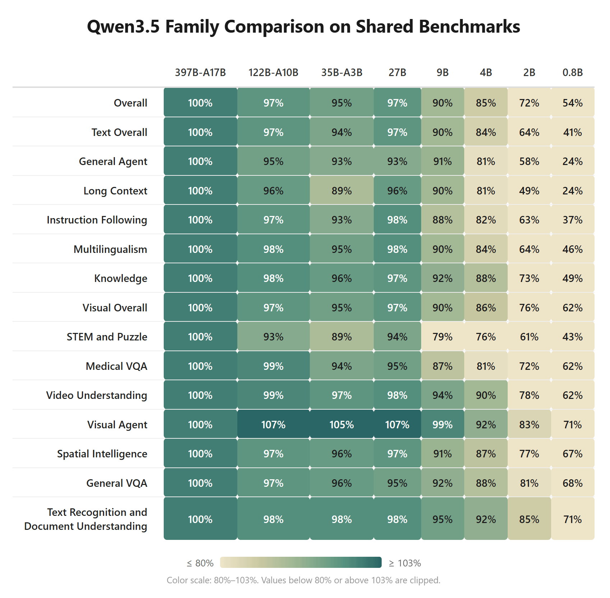
Candidate Models
| Model | Params | Size | Notes |
|---|---|---|---|
SmolLM2-135M-Instruct Q4_K_M |
135 M | ~95 MB | Very fast, limited reasoning. Good for routing/classification only. |
SmolLM2-360M-Instruct Q4_K_M |
360 M | ~230 MB | Balanced. Recommended fallback if 0.8B is too tight on space. |
Qwen3.5-0.8B Q8.0 |
800 M | ~880 MB | Our primary choice. Best quality-per-parameter for edge. |
Qwen3.5-2B (Q4-Q8) |
2B | 1.25 to 2 GB | Excellent, but a little slower. |
Quantization: Q4 vs Q8 for Sub-1B Models
During testing on the UNO Q, Q4_K_M quantization produced noticeably weaker output quality for sub-1B models compared to Q8_0. The aggressive 4-bit compression loses too much information when the model has only 800M parameters to begin with. There’s less redundancy to exploit than in bigger models.
At sub-1B scale, Q4 is aggressive. The quantization error compounds in smaller model. Q6 or Q8 helps a lot.
Also, prefer
min_povertop_pfor sampling. Something likemin_p=0.05withtemp=0.7works better for small models because it dynamically adjusts the candidate pool based on the probability distribution rather than using a fixed cutoff.top_pat low temperatures produces a very narrow beam, and repetition becomes almost inevitable at these model sizes.
Recommendations:
- Start with Q4_K_M (~550 MB for Qwen3.5-0.8B) to verify the workflow fits on your board.
- Try Unsloth Dynamic quants (
UD-Q4_K_XL). These upcast critical layers to 8 or 16 bits while keeping overall size close to Q4. Available from the unsloth/Qwen3.5-0.8B-GGUF repo. - Try Q8_0 if you have space (~850 MB). Quality is meaningfully better, but leaves very little headroom on the current factory image. (This is the choice for this tutorial.)
- For production use, combine Q4 with strong few-shot prompting and
response_format: json_objectto compensate for quantization noise.
unsloth/Qwen3.5-2B-GGUF (UD-Q4_K_XL) is a great model when latency is not an issue. The 2B model with Unlosh Dynamic quants (
UD-Q4_K_XL) should have double the latency of the 0.8B/8_0 model, but it has superior performance.
3. Hardware and Software Requirements
Hardware
- Arduino UNO Q 4 GB variant (the 2 GB variant works with SmolLM2-360M or smaller only).
- USB-C data cable.
- Host computer with SSH (see the Setup chapter).
Software (already on the UNO Q from Setup)
| Tool | Purpose |
|---|---|
| Debian Linux (latest image) | Base OS on the MPU |
| Python 3.13 | Application code |
| SSH server | Remote access |
Software (installed in this tutorial)
| Tool | Purpose |
|---|---|
build-essential, cmake, git |
Build llama.cpp from source |
libcurl4-openssl-dev |
Enables in-binary model downloads |
openai, requests (Python) |
Talking to llama-server from Python |
4. Preparing the Linux Side
SSH into the board and check what you have:
uname -m # aarch64
free -h # ~3.6 Gi total, ~3.0 Gi available
df -h / # root partition — check available spaceStep 1 — Verify Swap Is Present
The current factory image includes 1.8 GB of swap pre-configured. Verify:
free -hYou should see a Swap: line showing about 1.8 Gi total.
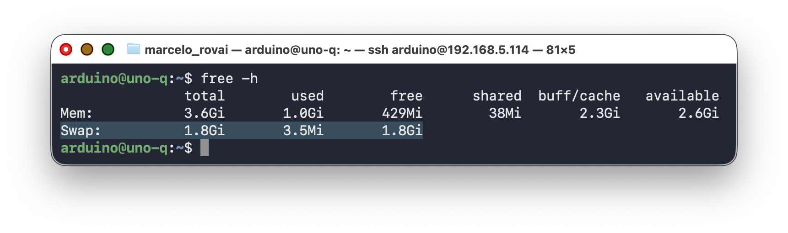
If swap is missing (older images), add it:
sudo fallocate -l 2G /home/swapfile
sudo chmod 600 /home/swapfile
sudo mkswap /home/swapfile
sudo swapon /home/swapfile
echo '/home/swapfile none swap sw 0 0' | sudo tee -a /etc/fstabSwap acts as a safety net during the brief model-loading phase. You don’t want to hit it during inference (it would tank throughput), but having it prevents the OOM killer from ending your processes during the load spike.
Step 2 — Install Build Tools
sudo apt update
sudo apt install -y build-essential cmake git pkg-config \
libcurl4-openssl-dev5. Building llama.cpp from Source
llama.cpp’s Makefile-based build is deprecated; the supported path is CMake. The old LLAMA_CURL=1 make recipe you may find in older tutorials fails with make: command not found on the UNO Q’s factory image, which does not include make by default.
Step 1 — Clone the Repository
A full clone of the llama.cpp repo pulls ~400 MB of git history you don’t need. A shallow clone saves disk space:
cd /home/arduino
git clone --depth 1 https://github.com/ggml-org/llama.cpp
cd llama.cppThis brings the clone down from ~550 MB to roughly 80–100 MB.
Step 2 — Configure and Build
From the llama.cpp folder, run:
cmake -B build \
-DLLAMA_CURL=ON \
-DGGML_NATIVE=ON \
-DCMAKE_BUILD_TYPE=Release
cmake --build build --config Release -j4The flags:
LLAMA_CURL=ONenables model downloads directly insidellama-serverandllama-cli.GGML_NATIVE=ONdetects the A53’s NEON SIMD capabilities and emits the right CPU intrinsics.-j4uses all four cores. The build takes 20–25 minutes on the UNO Q.
If the build runs out of memory (the board freezes or the build dies), drop to
-j2. The build takes longer but stays under the OOM threshold. With the factory swap in place,-j4normally works.
Step 3 — Verify the Binaries
ls build/bin/llama-cli build/bin/llama-server
./build/bin/llama-cli --version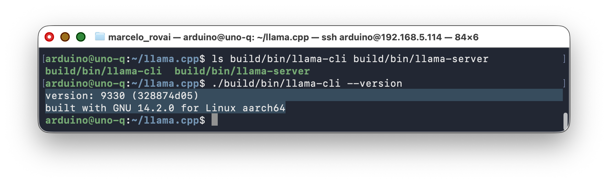
Step 4 — Reclaim Disk Space (Optional)
The build tree adds about 142 MB of intermediate files. On a board with limited storage, copy the runtime binaries to a slim directory and delete the rest:
cd /home/arduino
mkdir -p llama-runtime
cp llama.cpp/build/bin/llama-server llama-runtime/
cp llama.cpp/build/bin/llama-cli llama-runtime/
cp llama.cpp/build/bin/*.so* llama-runtime/ 2>/dev/null
# Verify standalone operation
cd llama-runtime
LD_LIBRARY_PATH=. ./llama-cli --version
# Delete the source + build tree (saves ~690 MB)
rm -rf /home/arduino/llama.cpp
df -h /After cleanup, you should have roughly 1.5 GB free — enough for the model and normal system operation.
Alternative: Use pre-built binaries. llama.cpp publishes pre-built aarch64 Linux binaries on its GitHub Releases page. Download the tarball, extract
llama-serverandllama-cli, and skip the whole build step. This turns this section into a 2-minute download instead of a 25-minute build, which is useful for classroom setups where you don’t need to teach the build process.
6. Choosing and Downloading a Model
Step 1 — Create the Models Directory
mkdir -p /home/arduino/models
cd /home/arduino/modelsStep 2 — Download Qwen3.5-0.8B
Two of the best quantizations are from Bartowski and Unsloth.
For the first part of this tutorial, the test was with 4-bit and 8-bit Bartowski quantization. The best result was with the Q8_0 version (about 797 MB).
cd ~/models
wget https://huggingface.co/bartowski/Qwen_Qwen3.5-0.8B-GGUF/resolve/main/\
Qwen_Qwen3.5-0.8B-Q8_0.ggufFor 4-bit quantization (about 553 MB):
wget https://huggingface.co/bartowski/Qwen_Qwen3.5-0.8B-GGUF/resolve/main/\
Qwen_Qwen3.5-0.8B-Q4_K_M.gguf
ls -lh Qwen_Qwen3.5-0.8B-Q4_K_M.ggufI also make tests with Unsloth. The Unsloth Dynamic quant, which upcasts critical model layers to 16 bits while keeping the overall file size close to Q8:
The best is to put the models inside a directory to not make confusion
mkdir -p ~/models/Qwen3.5-0.8B-GGUF
cd ~/models/Qwen3.5-0.8B-GGUF
wget -c "https://huggingface.co/unsloth/Qwen3.5-0.8B-GGUF/resolve/main/\
Qwen3.5-0.8B-Q8_0.gguf"For the 2 GB UNO Q or extremely tight storage:
wget https://huggingface.co/bartowski/SmolLM2-360M-Instruct-GGUF/resolve/main/\
SmolLM2-360M-Instruct-Q4_K_M.ggufAdjust the model path in the sections below accordingly.
A Note on Quantization Quality for Sub-1B Models
During testing, the Q4_K_M quantization of Qwen3.5-0.8B produced noticeably weaker structured outputs compared to larger models at the same quantization level. That’s expected: aggressive 4-bit quantization removes information that a 0.8B model can’t afford to lose, because smaller models have less redundancy.
Things that helped in the tests:
- Strong few-shot prompting (two examples in the system prompt). The most effective single fix.
response_format: json_objectto constrain decoding to valid JSON.presence_penalty=1.5to prevent repetition loops.- Low
max_tokens(60–80) to keep answers short and focused. - Trying the Unsloth
UD-Q4_K_XLquant, which upcasts sensitive layers automatically.
7. Using llama-cli
llama-cli is a self-contained, one-shot tool: no HTTP, no extra process, just “run a prompt, see the text, exit.” It’s the fastest way to sanity-check a model before building anything on top of it. Once you want anything persistent, multi-client, or called from a program, you’ll move to llama-server (Section 8).
Qwen 3.5 and Thinking Mode
Qwen3.5 is a hybrid reasoning model, and by default the models are in “thinking mode.” For edge use, disable it. llama-cli needs to be told this explicitly via the --reasoning flags. Without them, the model may enter thinking mode, producing long internal reasoning chains that burn minutes of CPU time and often loop without reaching a conclusion.
In current llama.cpp builds, use --reasoning off and --reasoning-budget 0 on the command line. The older --chat-template-kwargs '{"enable_thinking":false}' flag is deprecated and produces a warning. If you see it in other tutorials, replace it with the newer flags.
Recommended inference parameters for non-thinking mode (from the Unsloth Qwen3.5 guide):
| Parameter | Value | Purpose |
|---|---|---|
temperature |
0.7 to 1.0 | Moderate creativity for general tasks |
top_p |
0.8 | Nucleus sampling |
top_k |
20 | Limit token pool |
min_p |
0.0 | Disabled |
presence_penalty |
1.5 | Prevent repetition loops (critical for small models) |
repetition_penalty |
1.0 | Disabled (presence_penalty handles it) |
Call llama-cli with those settings:
cd ~/llama.cpp
./build/bin/llama-cli \
--model ~/models/Qwen_Qwen3.5-0.8B-Q8_0.gguf \
--threads 4 \
--ctx-size 1024 \
--temperature 0.7 \
--top-p 0.8 \
--top-k 20 \
--min-p 0.0 \
--presence-penalty 1.5 \
--repeat-penalty 1.0 \
--reasoning off \
--reasoning-budget 0At the prompt >, type a question, for example:
> What is the capital of Brazil. Answer with one word.
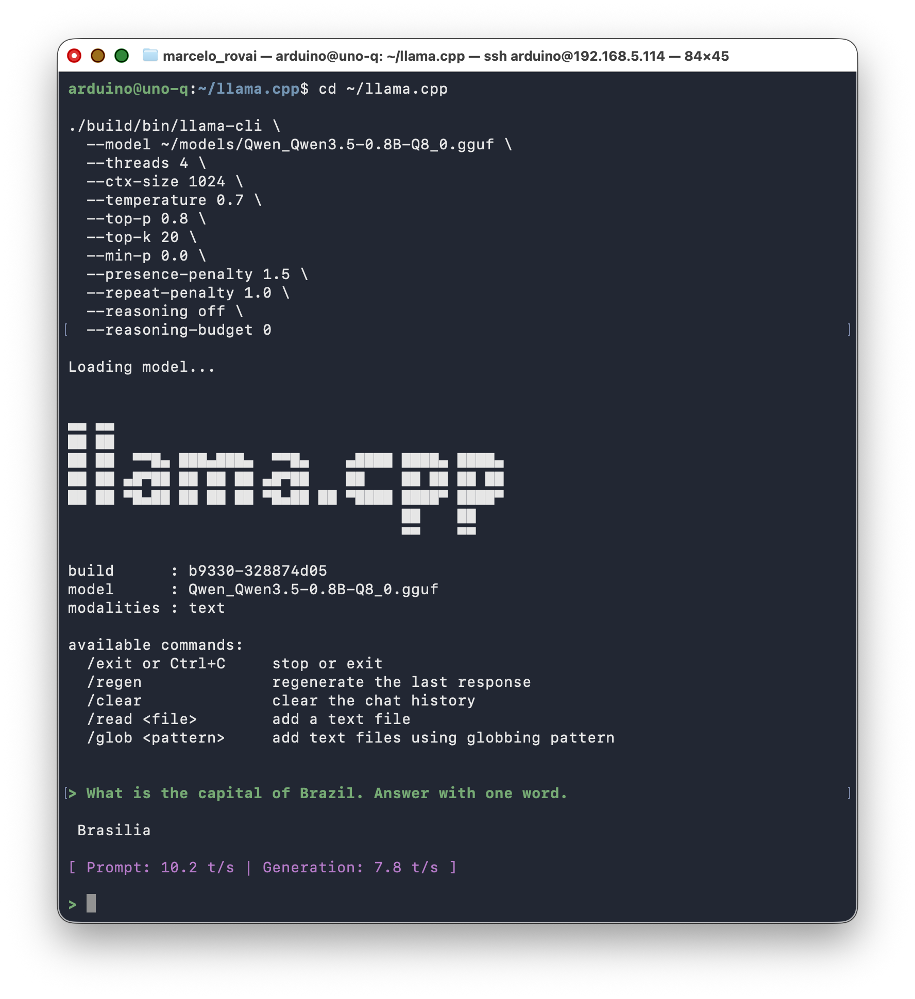
Latency in tokens/s is acceptable and usable, in the 5–10 tokens/s range.
While inference runs, monitor CPU use and temperature:
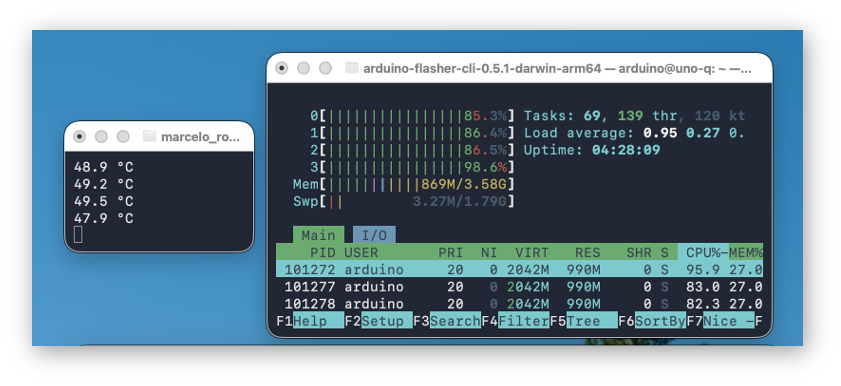
The UNO Q handles SLMs well. The inferences were done without any heatsink or fan. Internal temperature increased by about 20 °C (from ~30 °C to ~50 °C). For long answers, the temperature reached ~60 °C, which is lower than a Raspberry Pi 5 with an active cooler.
Check session 8. Using llama-server / Step 4 — Thermal Monitoring for creating a scriot to measure the temperature
Create a Helper Script
You can wrap the full llama-cli command in a small shell script and run it instead of typing all the flags every time.
On the UNO Q:
nano ~/qwen_cli_llama.shPaste:
#!/usr/bin/env bash
# Simple Qwen3.5 0.8B 8-bit CLI on UNO-Q without thinking
MODEL=~/models/Qwen_Qwen3.5-0.8B-Q8_0.gguf
LLAMA=~/llama.cpp/build/bin/llama-cli
"$LLAMA" \
--model "$MODEL" \
--threads 4 \
--ctx-size 1024 \
--temperature 0.7 \
--top-p 0.8 \
--top-k 20 \
--min-p 0.0 \
--presence-penalty 1.5 \
--repeat-penalty 1.0 \
--reasoning off \
--reasoning-budget 0 \
-p "$*"Save and make it executable:
chmod +x ~/qwen_cli_llama.shOptionally, add
~/to yourPATHin~/.bashrcor~/.profileso you can call it without the full path.
Use It With a Simple Command
Now run:
~/qwen_cli_llama.sh "Explain edge AI in two sentences."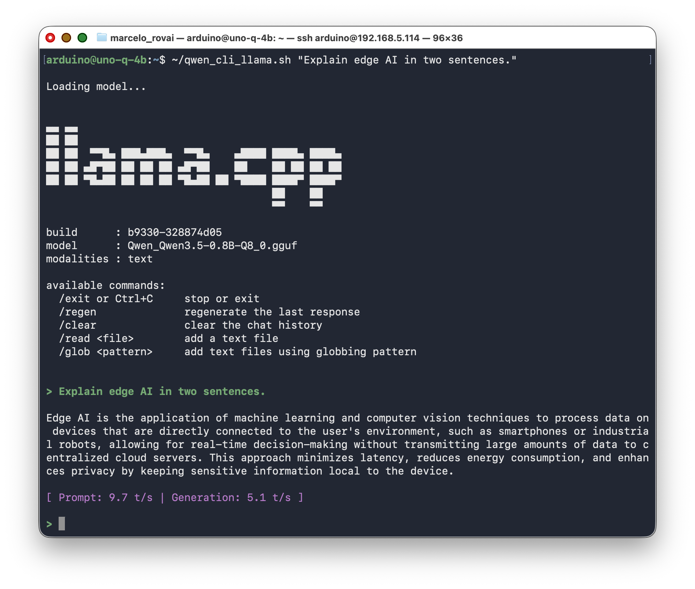
or, after adding ~/ to PATH and reloading the shell:
qwen_cli_llama.sh "Explain edge AI in two sentences."8. Using llama-server
The Arduino UNO Q can host a small language model directly on its Linux side, and the easiest way to expose that model to other programs — Python scripts, curl, a browser — is through llama-server. Instead of calling the model via a one-shot CLI, llama-server loads the GGUF file into RAM once and exposes a simple HTTP API on localhost, so any client can send prompts and receive completions via JSON.
In this chapter you’ll run llama-server interactively, in the foreground — no systemd, no background service. That’s enough to learn the API and build client code against it. (Turning it into a service that survives reboots is covered in a later, project-focused chapter.)
You need two SSH sessions open to the UNO Q at the same time:
- Terminal 1 runs
llama-serverin the foreground (you’ll see logs here). - Terminal 2 sends queries with
curland Python.
Step 1 — Start llama-server (Terminal 1)
In your first terminal:
cd ~/llama.cpp
./build/bin/llama-server \
--model ~/models/Qwen_Qwen3.5-0.8B-Q8_0.gguf \
--threads 4 \
--ctx-size 1024 \
--port 8081 \
--reasoning off \
--reasoning-budget 0 \
--alias qwen3.5-0.8b
--aliasgives the server a stable name to answer to, independent of the GGUF filename. Client code (curl, Python, the WebUI) can always ask for"model": "qwen3.5-0.8b"no matter which actual file is loaded behind it — which matters the moment you start swapping models (see the multimodal chapter for a worked example). Use it from here on, every time you startllama-server.
Watch the log output. You should see:
- The model loading (file path, parameter count, quantization type)
thinking = 0, which confirms reasoning mode is disabledHTTP server listeningon the port you chose
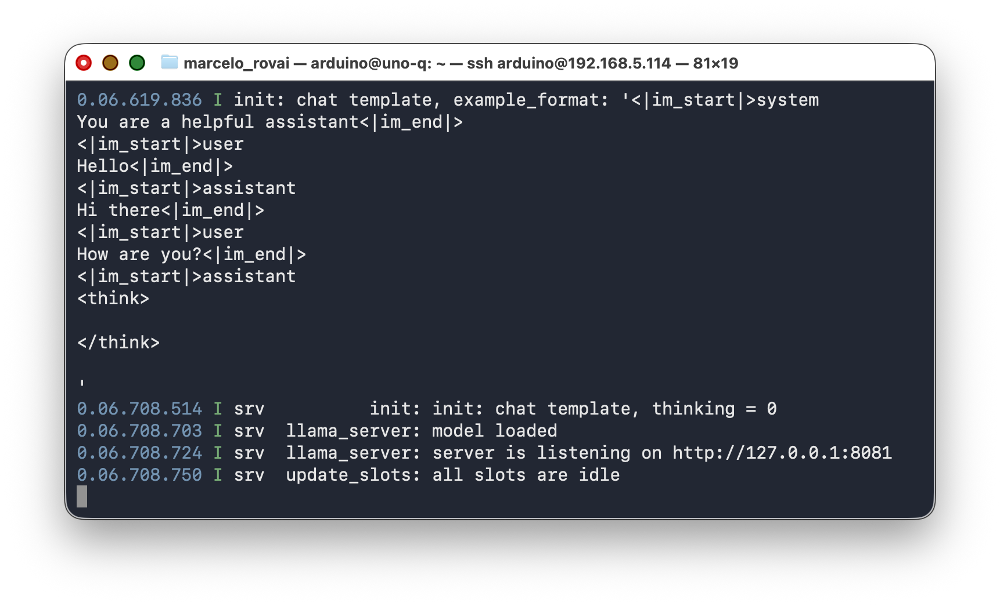
If port 8081 is busy, try another port:
sudo ss -ltnp | grep 8081Do not close this terminal. The server runs as long as this process is alive. When you’re done testing, press
Ctrl+Cto stop it.
Step 2 — Quick Test With curl (Terminal 2)
Open a second SSH session to the UNO Q. First, verify the server is alive:
curl -s http://127.0.0.1:8081/health | python3 -m json.tool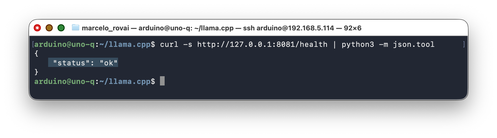
You should see "status": "ok". Now send a prompt using the /completion endpoint:
curl http://127.0.0.1:8081/completion \
-H "Content-Type: application/json" \
-d '{
"prompt": "In 2 sentences, what is the Olympic Games?",
"n_predict": 128
}'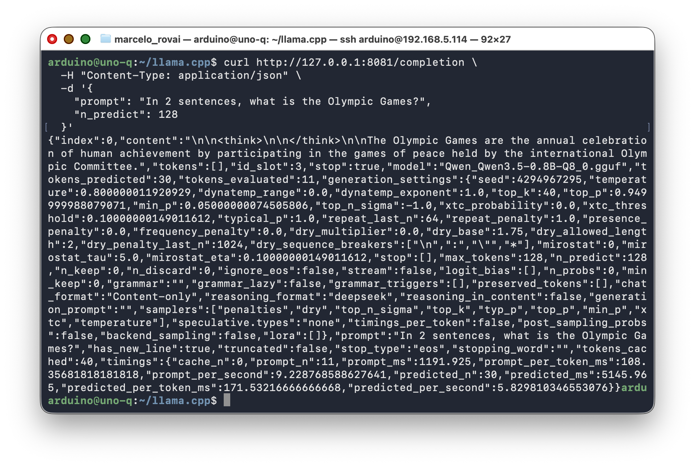
Switch back to Terminal 1 while it processes. You’ll see the server log each token as it generates, plus timing information. That’s the main advantage of running in the foreground: you see exactly what the model is doing.
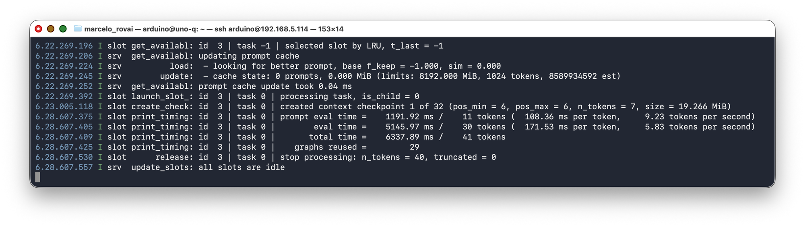
Now try the OpenAI-compatible /v1/chat/completions endpoint, which is what the Python clients in Section 9 use:
curl http://127.0.0.1:8081/v1/chat/completions \
-H "Content-Type: application/json" \
-d '{
"model": "qwen3.5-0.8b",
"messages": [
{"role": "system", "content": "You are concise. Answer in one sentence."},
{"role": "user", "content": "What is TinyML?"}
],
"max_tokens": 80,
"temperature": 0.7,
"top_p": 0.8,
"presence_penalty": 1.5
}'The response arrives as a JSON object. The model’s answer is in choices[0].message.content.
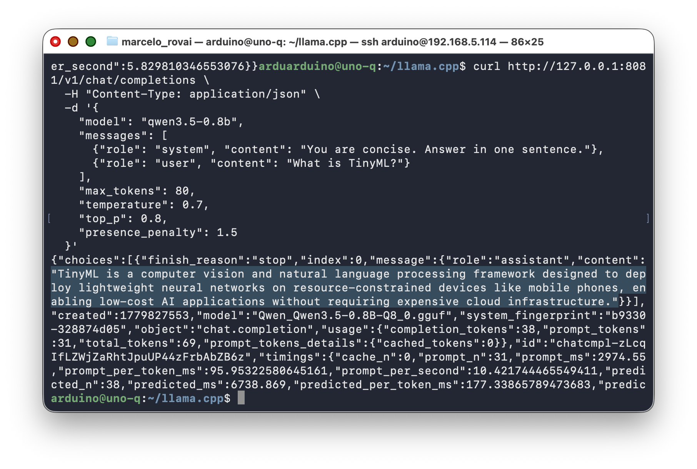
Step 3 — Stop the Server
When you’re done testing, go back to Terminal 1 and press Ctrl+C. The model unloads and the port is freed. Keep it running for the next section — you’ll need it for the Python examples.
Step 4 — Thermal Monitoring (Optional)
The UNO Q exposes Qualcomm thermal data through Linux thermal and hwmon interfaces. To monitor the MPU temperature in real time during inference:
# Check thermal zone type
cat /sys/class/thermal/thermal_zone0/type
# Read current temperature (in millidegrees Celsius)
cat /sys/class/thermal/thermal_zone0/temp
# Live monitor (updates every second)
watch -n 1 "cat /sys/class/hwmon/hwmon0/temp1_input"For a friendlier readout, drop a small Python script in ~/q_temp_monitor.py:
#!/usr/bin/env python3
import time
from pathlib import Path
# The mapss_thermal zone exposes the QRB2210 SoC temperature
TEMP_PATH = Path("/sys/class/hwmon/hwmon0/temp1_input")
def read_temp_c():
raw = int(TEMP_PATH.read_text().strip())
return raw / 1000.0
if __name__ == "__main__":
try:
while True:
print(f"{read_temp_c():.1f} °C")
time.sleep(1.0)
except KeyboardInterrupt:
passMake it executable and run it in a side terminal while the SLM works:
chmod +x ~/q_temp_monitor.py
~/q_temp_monitor.py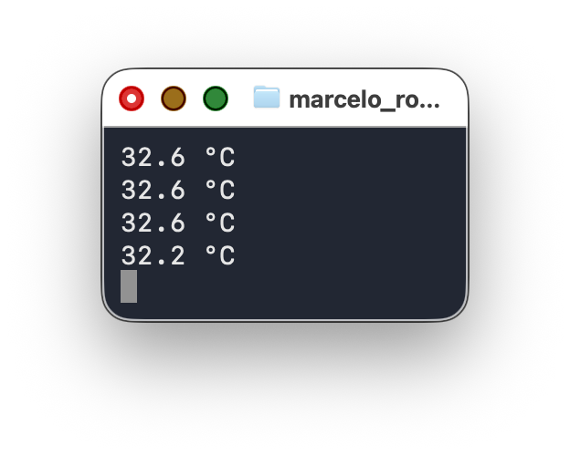
You should see the reading climb from ~32 °C at idle to whatever your workload pushes it to during inference.
Thermal Behavior (Measured)
During testing on a UNO Q 4 GB without any heatsink or fan:
| Condition | Internal CPU Temperature |
|---|---|
| Idle (no inference) | ~34 °C |
| Normal inference (short prompts) | ~54 °C (+20 °C above idle) |
| Sustained inference (long answers) | ~62 °C |
All of these are well under the 70–80 °C range where ARM cores begin to throttle. The UNO Q runs cooler than a Raspberry Pi 5 under comparable loads. No heatsink or fan is required for normal SLM workloads, even in sustained use.
Step 5 — The Built-In WebUI (Optional)
Recent llama.cpp builds ship a SvelteKit-based chat interface embedded directly into the llama-server binary. No extra install, no extra flag. If the build from Section 5 is recent enough, the UI is already running on the same port as the API.
From the UNO Q itself, use http://127.0.0.1:8081/, or tunnel from your laptop with ssh -L 8081:127.0.0.1:8081 arduino@<UNO_Q_IP> and open http://localhost:8081/ in the host browser.
Alternatively, adding --host 0.0.0.0 to llama. cpp.cpp command, the WebUI can be opened from your desktop browser using the UNO Q IP Address:
cd ~/llama.cpp
./build/bin/llama-server \
--model ~/models/Qwen_Qwen3.5-0.8B-Q8_0.gguf \
--threads 4 \
--ctx-size 1024 \
--port 8081 \
--host 0.0.0.0 \
--reasoning off \
--reasoning-budget 0 \
--alias qwen3.5-0.8bAnd so, from any device on the same Wi-Fi, open:
http://
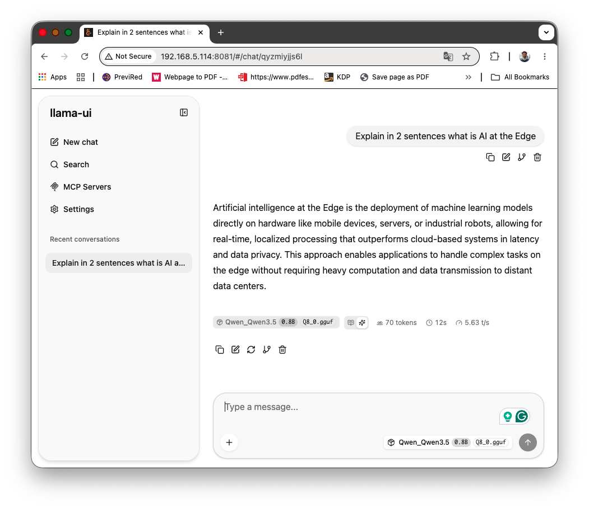
What’s useful here:
- Streaming chat against your local Qwen3.5-0.8B, no extra app needed.
- A live sampling panel for
temperature,top_p,presence_penalty, and friends. Useful for tuning before you bake values into Python code. - Reasoning/thinking blocks render in their own collapsible section. With
--reasoning off --reasoning-budget 0the section stays empty, which is a quick visual confirmation that the flag worked. - For more information, see guide: using
llama-ui— the new WebUI of llama.cpp.
What to skip on a 4 GB UNO Q:
- File uploads. The UI accepts images and PDFs, but Qwen3.5-0.8B is text-only (We will learn how to handle image further) . Dropping an image either gets ignored or produces a hallucination. Vision-capable GGUFs (Qwen3.5-VL, LLaVA variants) don’t fit comfortably in this board’s RAM.
- MCP tool calling and built-in agent tools. Available in the UI, but enabling filesystem or shell tools on a server bound to
0.0.0.0is a security footgun. Keep them off in this setup.
If the URL returns a bare JSON error instead of a UI, your
llama-serverbuild predates the embedded WebUI. Rebuild from the latest llama.cppmaster, or grab a recent pre-built aarch64 binary from the GitHub Releases page.
9. Talking to llama-server From Python
llama-server speaks the same API shape as OpenAI’s Chat Completions endpoint. That means you have two ways to call it from Python: the official openai client library (recommended — it’s the standard interface, and the same code works against a cloud model later), or raw HTTP requests (useful to understand what the library does underneath, or when you can’t add a dependency).
With Terminal 1 still running llama-server from Section 8, use Terminal 2 for the examples below.
9.1 Using the openai Client Library
Install it:
pip install --user openaiCreate ~/qwen_client.py:
nano ~/qwen_client.pyPaste:
#!/usr/bin/env python3
"""
Chat with the local Qwen3.5 SLM served by llama-server,
using the standard OpenAI-compatible client library.
Run llama-server in another terminal first, then call this script.
"""
import re
import sys
from openai import OpenAI
# llama-server doesn't check the API key, but the client requires one.
client = OpenAI(base_url="http://127.0.0.1:8081/v1", api_key="not-needed")
MODEL = "qwen3.5-0.8b"
def strip_think(text):
"""Remove residual <think>...</think> tags from Qwen3.5 output."""
return re.sub(r"<think>.*?</think>", "", text, flags=re.DOTALL).strip()
def ask(messages, max_tokens=128, stream=True):
"""Send a chat completion request and return the cleaned response."""
response = client.chat.completions.create(
model=MODEL,
messages=messages,
max_tokens=max_tokens,
temperature=0.7,
top_p=0.8,
presence_penalty=1.5,
stream=stream,
)
if not stream:
return strip_think(response.choices[0].message.content)
chunks = []
for chunk in response:
delta = chunk.choices[0].delta.content or ""
print(delta, end="", flush=True)
chunks.append(delta)
print()
return strip_think("".join(chunks))
if __name__ == "__main__":
system = "You are concise."
history = [{"role": "system", "content": system}]
if len(sys.argv) > 1:
# One-shot mode: pass the prompt as arguments
prompt = " ".join(sys.argv[1:])
history.append({"role": "user", "content": prompt})
ask(history)
else:
# Interactive REPL with conversation memory
print("Qwen3.5 on UNO Q (via llama-server + openai). Ctrl+C to exit.\n")
try:
while True:
prompt = input("> ").strip()
if not prompt:
continue
history.append({"role": "user", "content": prompt})
print()
reply = ask(history)
history.append({"role": "assistant", "content": reply})
print()
except (KeyboardInterrupt, EOFError):
print("\nBye!")Make it executable and test:
chmod +x ~/qwen_client.py
# One-shot test
~/qwen_client.py "In one sentence, what causes dengue fever?"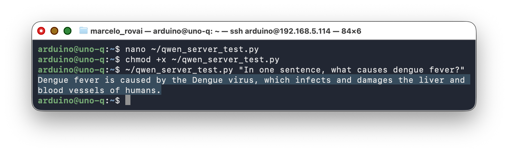
# Interactive REPL, with memory across turns
~/qwen_client.py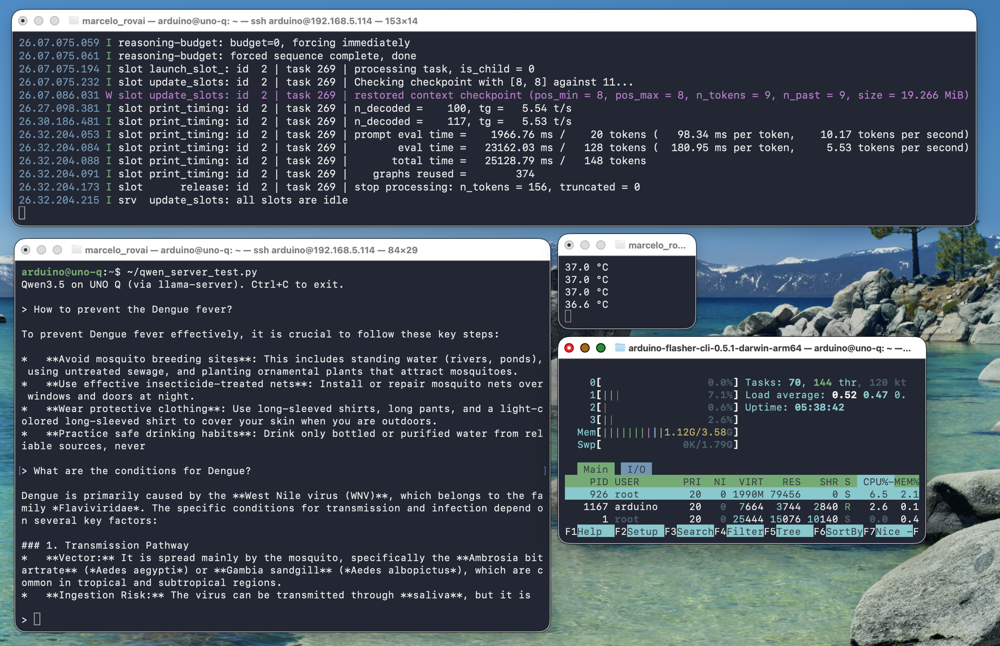
Two things worth noticing in this script:
stream=Trueby default. Tokens print as they’re generated instead of waiting for the full response — the same experience you get from the WebUI orllama-cli.historyis a plain Python list. Each turn appends both the user prompt and the assistant’s reply, so the model sees the full conversation on the next call. This is exactly how multi-turn “memory” works with any OpenAI-compatible API — there’s no hidden server-side state.
Structured JSON output
The same client works for structured tasks, not just chat. Ask the model to produce JSON:
~/qwen_client.py "Given: temp=30.2C, humidity=85%, standing water=yes. Classify dengue risk as low/medium/high. Reply ONLY with JSON: {\"risk\":\"...\", \"reason\":\"...\"}"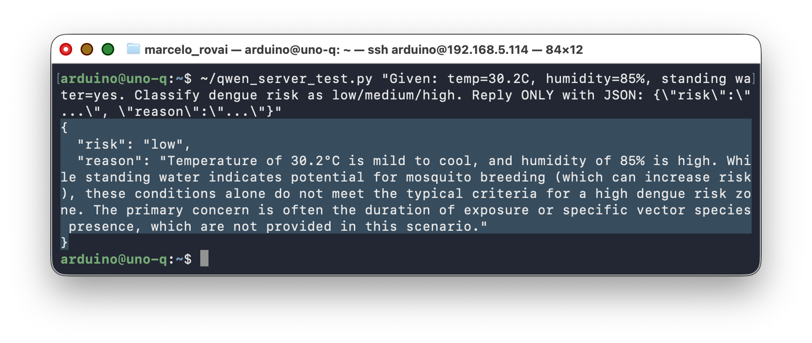
The model returns valid JSON most of the time at Q8 quantization. This pattern — sensor-like input in, structured verdict out — is exactly what a real application built on this chapter would use; see Going Further.
9.2 Alternative: Raw HTTP With requests
Sometimes you don’t want the openai dependency — an embedded script, a minimal container image, or just wanting to see the wire format directly. llama-server’s HTTP API is plain JSON over HTTP, so requests works fine too:
import requests
resp = requests.post(
"http://127.0.0.1:8081/v1/chat/completions",
json={
"model": "qwen3.5-0.8b",
"messages": [
{"role": "system", "content": "You are concise."},
{"role": "user", "content": "What is TinyML?"},
],
"max_tokens": 80,
"temperature": 0.7,
"top_p": 0.8,
"presence_penalty": 1.5,
},
timeout=120,
)
resp.raise_for_status()
print(resp.json()["choices"][0]["message"]["content"])9.3 Library vs. Direct HTTP: When to Use Which
openai library |
raw requests |
|
|---|---|---|
| Code | Shorter, typed response objects | More verbose, manual JSON parsing |
| Streaming | Built-in iterator over chunks | Manual SSE line parsing |
| Swapping to a cloud provider | Change base_url + api_key, done |
Change the URL and headers by hand |
| Dependencies | Adds openai package |
Only requests (often already installed) |
| Error handling | Raises typed exceptions | You inspect status_code / response.text yourself |
| Best for | Application code, anything long-lived | Quick scripts, debugging, constrained environments |
For anything beyond a one-off test, prefer the library — it’s the same code you’d write against a real OpenAI, Groq, or other hosted endpoint, which is the point of llama-server implementing that API in the first place.
10. Performance: What to Actually Expect
Measured on a UNO Q 4 GB with the factory image, Qwen3.5-0.8B Q8_0, no heatsink, no fan:
| Metric | Value |
|---|---|
| Cold model load (boot of llama-server) | ~4 s |
| Idle RAM (llama-server running) | ~700–800 MB |
| Model + context memory usage | ~1,122 MiB |
| Prompt processing throughput | ~9.9 tokens/s |
| Generation throughput | ~4.75 tokens/s |
| CPU usage during decode | 4 cores @ 100% |
| Idle board temperature (no inference) | ~34 °C |
| Temperature during normal inference | ~54 °C |
| Temperature during sustained long answers | ~62 °C |
| Thermal throttle threshold | 70–80 °C (never reached) |
| Power consumption (max.) | 3.1 W |
Takeaways:
- Usable but not desktop-class. Prompt processing at ~9.9 tok/s and generation at ~4.75 tok/s make the setup workable for periodic queries, but responses take a few seconds depending on length. The ~1,122 MiB memory footprint (model + context) leaves about 2.5 GB for the OS and your application. Tight but viable on the 4 GB board.
- Q4 quantization shows quality tradeoffs. At 0.8B parameters, the model has less redundancy than a 7B model, so Q4 compression removes information that matters. Strong few-shot prompting and
presence_penalty=1.5compensate for most of it. Use Q8_0 or the Unsloth Dynamic quant if storage allows. - Thermal behavior is not a concern. The +20 °C rise from idle to inference is modest, and even sustained workloads only reach ~62 °C, well under the 70–80 °C throttle threshold. No heatsink is required for normal lab use.
- Thinking mode kills the board. With thinking enabled, the model spends 30–60 seconds generating internal reasoning chains before producing any output, and often loops without reaching a conclusion. Always run Qwen3.5 Small with
--reasoning off --reasoning-budget 0. - Repetition loops. Without
presence_penalty=1.5, the model tends to repeat phrases or produce circular responses. A known behavior of small Qwen3.5 variants, well-documented in the Unsloth guide.
Token throughput vs. wall-clock latency
People often optimize for tokens/second when wall-clock latency is what actually matters. A 30-token answer at 10 tok/s (3 s) feels twice as responsive as a 100-token answer at 10 tok/s (10 s). Cap
max_tokensaggressively and design prompts to keep responses short.
11. Tips, Tricks, and Troubleshooting
Model Loops or Produces Very Long Responses
This almost always means thinking mode is active. Verify the --reasoning off --reasoning-budget 0 flags are present on your llama-server / llama-cli command line, and that presence_penalty is set to 1.5 in your API calls.
Even with --reasoning off, Qwen3.5 may still emit an empty <think></think> tag in its output. That’s cosmetic — the strip_think() function in the Python examples handles it. The content inside the tags is empty, so no actual reasoning is happening.
If you see the deprecation warning about --chat-template-kwargs, update your command line to use --reasoning off --reasoning-budget 0 instead.
llama-cli Shows Reasoning Even With Flags
A known issue: llama-cli is less reliable than llama-server for suppressing Qwen 3.5 reasoning traces. For anything you build on top, prefer llama-server. The CLI is best reserved for quick experiments.
Out-of-Memory Crashes
If the kernel OOM-killer takes out llama-server during model load:
- Confirm swap is enabled. Running
free -hshould show a non-zero swap size. - Reduce
--ctx-size(try 1024 or lower).
JSON Parse Failures From the Model
Even when asking for JSON explicitly, occasional responses include stray text. A simple, robust pattern:
import json
def parse_verdict(content):
try:
return json.loads(content)
except json.JSONDecodeError:
cleaned = content.strip().strip("`")
if cleaned.startswith("json"):
cleaned = cleaned[4:].lstrip()
return json.loads(cleaned)If failures persist, strengthen the system prompt ("Output MUST start with { and end with }"), or look into llama.cpp’s grammar-based decoding (GBNF) for a hard constraint instead of a prompt hint.
Disk Space Running Low
df -h /The root partition is ~9.8 GB total on older images. If you’re running low:
# Check what is using space
sudo du -sh /home/arduino/* | sort -h
# Clean apt cache
sudo apt clean
sudo apt autoremove -yIf you deleted the llama.cpp source tree and still need to rebuild later, use a shallow clone: git clone --depth 1 https://github.com/ggml-org/llama.cpp
12. Going Further
This chapter deliberately stopped at “the tools work and you can call them from Python.” Two follow-up chapters build real applications on top of what you just learned:
- A vision-language project — giving a small model eyes: loading a multimodal SLM and its projector, running a vision server, and reasoning about camera input.
- A dual-brain generative AI project — wrapping
llama-serveras a systemd service, connecting it to an Arduino sketch over Bridge RPC, and exposing it to other devices over Flask: a complete sensor-in, SLM-reasoning, actuator-out application.
Alternative Model (Qwen 3.5 2B)
The general rule from the empirical Qwen3.5 work is that parameter count beats quantization. A 4-bit version of a larger Qwen3.5 model can still be substantially stronger than a smaller one at higher precision, using nearly the same amount of memory. The jump from 0.8B to 2B is the largest for agent tasks and long contexts.
On the UNO Q specifically:
| Dimension | 0.8B Q8_0 | 2B UD-Q4_K_XL |
|---|---|---|
| Model file size | ~880 MB | ~1.25 GB |
| RAM footprint (model + 1024 ctx) | ~1.1 GB | ~1.9–2.0 GB |
| Free RAM after load (out of ~3 GB usable) | ~1.7 GB | ~0.8 GB |
| Generation speed (measured / estimated) | ~4.75 tok/s | ~1.8–2.5 tok/s |
| Quality on structured JSON | Good with a strong few-shot | Noticeably more robust |
| Quality on free-form chat | Adequate | Meaningfully better |
| Thermal load | ~54 °C inference | ~58–62 °C inference |
What this means in practice: the 0.8B Q8 stays responsive for chat and interactive demos; the 2B is worth the extra latency when quality matters more than snappy responses (e.g., an infrequent classification call rather than a live chat).
Worth trying before committing: the Unsloth
UD-Q4_K_XLvariant of the 2B, not vanilla Q4_K_M — it upcasts sensitive tensors automatically, so you get most of Q6 quality at near-Q4 size.
Alternative SLM Backends
This tutorial used llama.cpp because it’s the lowest-overhead path on a CPU-only ARM64 board. Three other backends worth knowing about:
- Ollama — easier setup, slightly higher overhead (Not simple to install in the UNO Q)
- LiteRT-LM — Google’s
.litertlmformat with built-in function calling and Python presets. Officially supports Raspberry Pi (and therefore the UNO Q’s aarch64 Debian). Tradeoff: limited to Gemma family models. - yzma — a Go wrapper around llama.cpp with
puregoinstead of CGo. Single Go binary, no daemon needed. Useful when you want to package everything into one executable.
Function Calling and Multimodal Models
Qwen3.5 supports function-calling formats, which lets the model itself decide when to call external tools (read a sensor, drive an actuator) instead of just answering a prompt. It also has native multimodal variants (text + image in a unified latent space) — the 0.8B text-only model used here is one point on a spectrum that includes vision-capable siblings. Both topics are picked up in the follow-up project chapters above.
Agentic AI Assistant
For example, implement the QClaw, an on-device agentic AI assistant for the Arduino Uno Q, developed by David Laurenvill. It writes, compiles, and uploads Arduino sketches; captures camera frames; drives Linux-side LEDs; reports network state; and scans I²C buses — all running entirely on the board. No internet. No API keys. No cloud.
13. Conclusion
What We Covered
This tutorial got a Small Language Model running locally on the Arduino UNO Q, entirely offline: building llama.cpp from source, downloading and comparing quantized Qwen3.5 models, running one-shot prompts with llama-cli, serving the model over HTTP with llama-server, and calling it from Python — first the standard way with the openai client library, then with raw requests to see what’s underneath. We also measured what’s realistic on this hardware: throughput, memory footprint, and thermal behavior.
Advantages of This Approach
- Local generative AI on Arduino hardware. Until the UNO Q, “running an LLM on an Arduino” was a contradiction. Now, on the same board used for Blink, a language model answers questions without an internet connection.
- Standard, transferable tools. An OpenAI-compatible HTTP API and the official
openaiclient library are the same tools you’d use against a hosted model. Nothing here is UNO-Q-specific except the hardware constraints. - The OpenAI-compatible API surface means application code can switch from a local SLM to a cloud LLM (and back) with a one-line URL change — a pattern worth internalizing early.
Limitations and Considerations
- Storage is tight. The factory image leaves ~830 MB free on a single 9.8 GB partition on older images. Building llama.cpp and downloading a model compete for that space.
- Q4 quantization degrades sub-1B models noticeably. A 0.8B model at Q4 loses more quality than a larger model at Q4 — less redundancy to exploit.
- No NPU acceleration. The QRB2210’s Adreno 702 GPU is not a reliable llama.cpp target. CPU is the only option: four A53 cores at 2 GHz doing all the work.
- Thinking mode is unusable on this hardware. Qwen3.5’s reasoning mode produces multi-minute inference times and frequent loops on the UNO Q. Always use
--reasoning off --reasoning-budget 0. - SLM quality at this size is still uneven. A 0.8B-parameter model will sometimes produce nonsense JSON, refuse benign prompts, or hallucinate reasons. Keep a human in the loop for any safety-critical decision.
Where Generative AI Fits in the Edge AI Curriculum
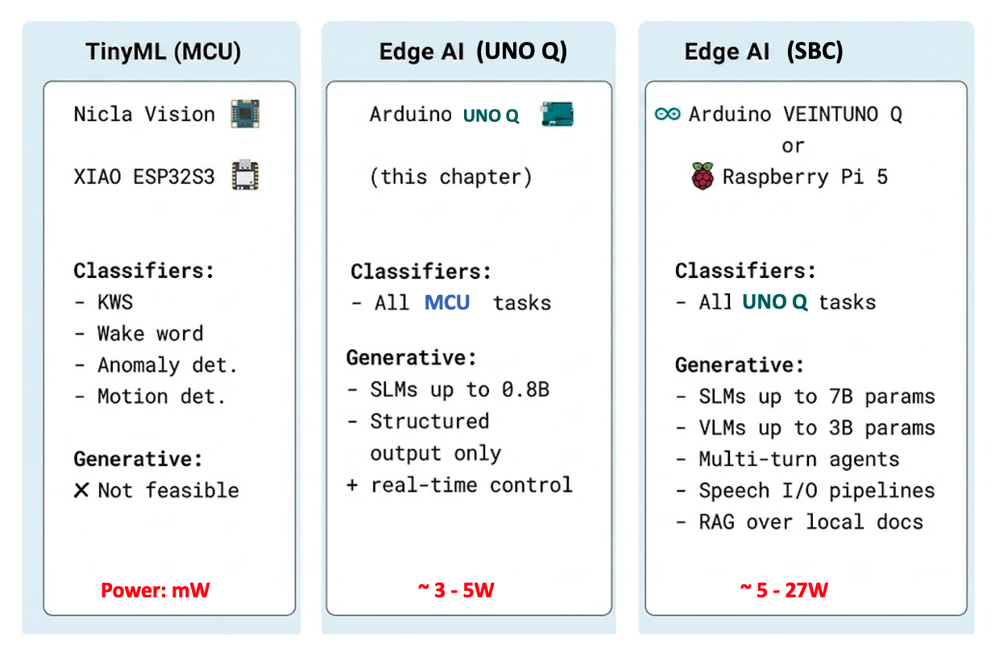
The UNO Q is where generative AI becomes possible at the edge but stays bounded: small models, short outputs, batch-rate inference. Students who understand the constraints here won’t be surprised when they hit the same constraints on a real production deployment.
A Note on the Arduino VENTUNO Q
The VENTUNO Q, with its 40 TOPS Dragonwing IQ8 NPU and 16 GB of RAM, will change what’s realistic. SLMs with several billion parameters become interactive; multimodal Qwen3.5-4B (with native vision) becomes practical; multi-turn agents with tool use work in real time. The patterns from this chapter (llama.cpp + OpenAI-compatible HTTP) port directly. Only the model sizes and the latency numbers change.
14. Resources
Useful Resources
References
- Qwen Team, “Qwen3.5 Small Model Series,” Alibaba Cloud, March 2026.
- Unsloth, “Qwen3.5 — How to Run Locally,” https://unsloth.ai/docs/models/qwen3.5, March 2026.
- Gerganov, G., “llama.cpp: Inference of Meta’s LLaMA model (and others) in pure C/C++,” https://github.com/ggml-org/llama.cpp
- Bartowski, “Qwen_Qwen3.5-0.8B-GGUF,” https://huggingface.co/bartowski/Qwen_Qwen3.5-0.8B-GGUF
- llama.cpp discussion, “Qwen3.5 Small: How to truly disable thinking?” https://github.com/ggml-org/llama.cpp/discussions/20476
- llama.cpp issue, “enable_thinking param cannot turn off thinking for qwen3.5,” https://github.com/ggml-org/llama.cpp/issues/20182
- Arduino, “Arduino UNO Q Product Page,” https://www.arduino.cc/product-uno-q/
- Pous, M., “Running local LLMs and VLMs on the Arduino UNO Q with yzma,” Arduino Project Hub, Feb 2026.
Tutorial created for IESTI05 — Edge AI Machine Learning System Engineering, UNIFEI. Licensed under GNU General Public License 3.0.